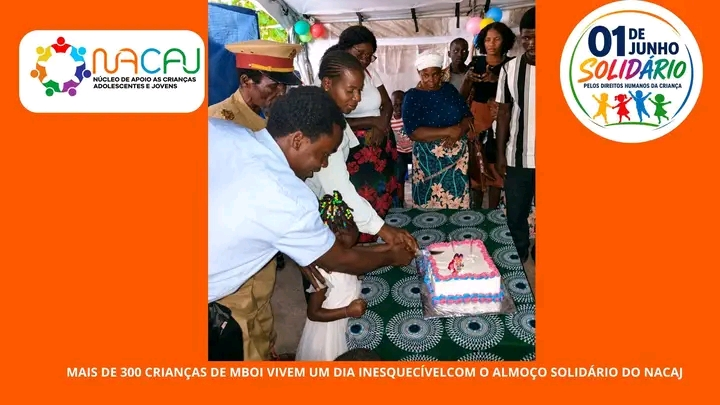
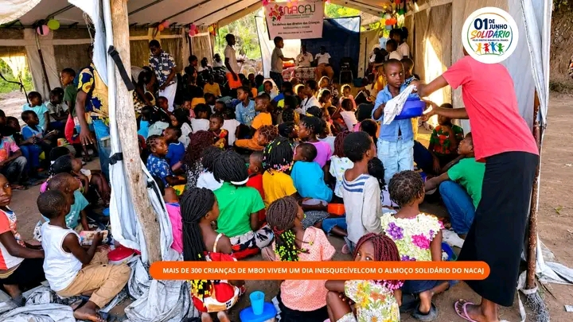
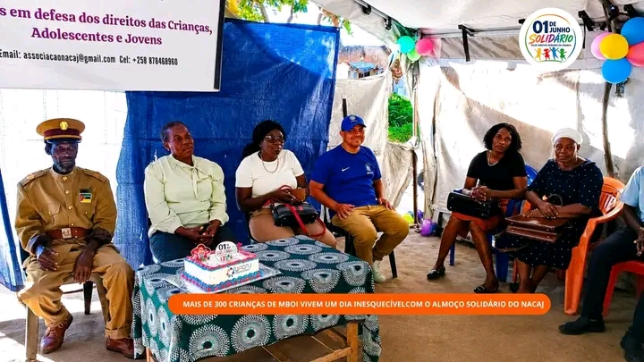
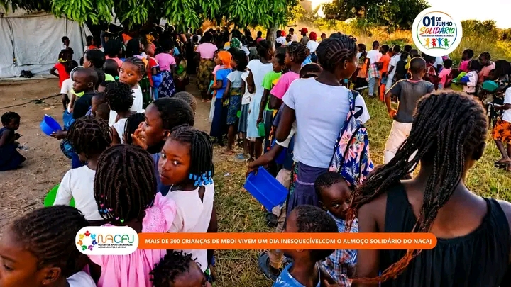

MAIS de 300 CRIANÇAS DE MBOI VIVEM UM DIA INESQUECÍVEL COM O ALMOÇO SOLIDÁRIO DO NACAJ
Mais de 300 crianças do povoado de Mboi, distrito de Namacurra, beneficiaram de um Almoço Solidário promovido pela Associação NACAJ (Núcleo de Apoio às Crianças, Adolescentes e Jovens), no dia 13 de Junho de 2026, no âmbito das celebrações do Dia Internacional da Criança, assinalado a 1 de Junho.
A actividade contou com a participação de líderes comunitários, da directora da escola, professores, membros do Conselho da Escola, pais e encarregados de educação. A cerimónia iniciou com uma oração dirigida pelo Missionário Carlos, do Brasil, seguindo-se momentos recreativos, danças, cânticos, brincadeiras, uma palestra sobre os Direitos da Criança, almoço solidário, distribuição de doces e o corte do bolo comemorativo, proporcionando um dia de alegria e aprendizagem para todas as crianças.
A iniciativa marcou o encerramento da campanha "Junho Solidário pelos Direitos Humanos", promovida pelo NACAJ em várias comunidades da província da Zambézia, reforçando o compromisso da associação com a promoção dos direitos da criança e da solidariedade.
Na ocasião, o Presidente do NACAJ, Justino Isac, agradeceu à direcção da escola pela cedência do espaço e reconheceu o apoio do Governo do Distrito de Namacurra, da ADPP-Moçambique, da Igreja Evangélica Assembleia de Deus Museu Namacurra, do Chefe do Posto Administrativo de Macuse, do Mestre Mesa Coutinho, do Teacher Rogério Macamo e do Missionário Carlos, que contribuíram para o sucesso da actividade.
Por sua vez, o líder comunitário de Mboi Jaime, enalteceu a iniciativa, afirmando que acções desta natureza devem continuar a ser realizadas, por contribuírem para a retenção das crianças na escola, fortalecerem a comunidade e promoverem os direitos da criança.
@NACAJ-MOÇAMBIQUE